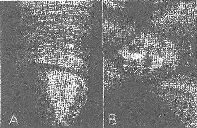
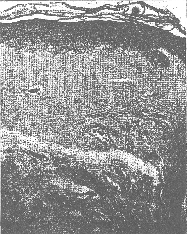

THE CIRCUMCISION REFERENCE LIBRARY
Balanitis xerotica obliterans (post-operationem) is the term which Stühmer1 used in 1928 to describe an atrophic, shrinking process involving the glans and prepuce and frequently leading to urethral stenosis. On the basis of the first five cases Stühmer concluded that, although there was a close relation among various sclerosing processes of the male genitals described in the literature under the titles of leukoplakia and kraurosis, the condition in his cases was singularin that it developed in men in the second and third decades and followed circumcision for phimosis. In a second article he2 described 4 more similar cases and expressed the opinion that balanitis xerotica obliterans was not identical with either kraurosis or leukoplakia of the male genitals.
Stühmer's euphonious title became a popular one; and several cases of sclerotic, atrophic dermatoses of the glans and prepuce have been reported before various foreign societies under the same name, and several contributions to the subject have appeared, such as those by Müller,3 Sprafke,4 Grütz,5 Beek6 and de Gregorio, de Blasio and Hijar.7 No formal article devoted to the subject has appeared in the American literature, although balanitis xerotica obliterans was discussed by Madden8 in his paper on the balantides, and a case was recently presented at a meeting of the San Francisco and Los Angeles Dermatological Societies by Novy.9 Fort this reason we felt that a discussion of this relatively uncommon disease and especially its relation to leukoplakia, scleroderma, lichen sclerosis et atrophicus and kraurosis, was worth while. Considerable confusion exists especially among balanitis xerotica obliterans, kraurosis and leukoplakia of the male genitals.
Leukoplakia of the penis was first referred to in 1892 by Perrin,10 who describe a case in which the prepuce and frenulum were involved but the glans and urethra were normal. Where the prepuce was retracted, its inner fold instead of being read was covered by a white shiny coating which was rough in some places and smooth in others. The lesion of the prepuce formed a firm apparently fibrous ring about the penis 1 inch (2.5 cm.) back of the coronal sulcus. Perrin and Leredde11 described a second case in 1897, in which there were some white sclerotic plaques on the glans and on the inner fold of the prepuce. Urethral stenosis was not noted. It was mentioned that some of the patches were rough and hypertrophic while others were smooth and atrophic.
Brandweiner12 (1907), Kraus13 (1907) and Fuchs14 (1908) also reported white, patchy thickenings of the prepuce or glans under the title of leukoplakia. Fuchs even at that time compared the process to kraurosis vulvae. In these cases, however, no mention was made of atrophic retraction of the glans or of urethral stenosis.
In 1908 Delbanco15 published 3 cases of what he termed kraurosis glandis et praeputii penis, characterized by a progressive, atrophic retraction of the glans and inner fold of the prepuce leading to stenosis of the urethral meatus. The disease was accompanied by intense itching and disagreeable paresthesias. Delbanco stated his belief that kraurosis was a disease sui generis differing from the condition in cases of leukoplakia described by Kraus and Fuchs.
In 1910 Galewsky16 discussed 6 cases of “leukokeratosis” (kraurosis) of the glans and prepuce, aligning them with those of Delbanco. Galewsky emphasized the difficulty of distinguishing kraurosis from leukoplakia when the location was on the penis.
In 1925 Benedek,17 from a study of 3 cases and a thorough survey of the literature, concluded that there was a disease consisting of leuko-keratotic lesions of the genitals characterized by pure hyperplasia and hypetrophy, to which he applied the term leukokeratosis. In contrast was the condition in cases such as those of Delbanco and Galewsky, presenting the histologic picture of atrophy, for which he reserved the term kraurosis. He suggested the name leukosclerokeratosis for the condition in which leukoplakic (hypertrophic) as well as kraurotic (atrophic) changes were present simultaneously. He expressed the opinion that leukokeratosis, leukosclerotosis, kraurosis and even subsequent malignant degeneration were closely related and represented various stages of the same pathologic processes.
Genner and Nielson,18 in 1931, published an extensive article dealing with leukokeratosis and kraurosis of the penis and described 3 cases under the title leukokeratosis. The authors concluded that on the basis of all available experience the exact relation of leukokeratosis (leukoplakia) and kraurosis to one another was not clearly established. For a more detailed consideration of the pertinent literature reference may be made to the publications of Benedek or Genner and Nielson.
CLINICAL FEATURES
We have studied a total of 18 cases of balanitis xerotica obliterans, and Dr. Harry Foerster set us histologic sections from an additional case (Michelson, 9 cases; Sweitzer, 3; Madden, 3; Freeman, 1 and Laymon 2). The disease occurred at various ages ranging from 22 to 65. A relationship to circumcision could not be determined in any of the patients, and a history of repeated attacks of balanoposthitis was notably absent except in 1. Each of the patients presented much the same picture, which will be described in detail in another part of the paper. Urethral stenosis was present in all.
Stühmer characterized balanitis xerotica obliterans as an obliterative cicatrixical, sclerotic shrinking process involving the prepuce and glans. In his patients, who were relatively young (under 40), the lesions appeared as a rule several months after circumcision or dorsal incision of the prepuce for phimosis. The disease, however, is not exclusively limited to young persons, as illustrated by such patients as those of Morimoto19 (64 years old), Müller (66 years old) and Grütz (4 patients over 50) and several of ours. Also, since Stühmer's article was published, identical conditions have been described in patients wwho had never had a circumcision or a dorsal incision; hence it must be assumed that an operative procedure is not a requisite for the diagnosis of balanitis xerotica obliterans. For example, in 5 of the 12 cases described by de Gregario, de Blasio and Hijar there had been no previous operation of any kind.
The early symptoms of the disease vary in acuity and intensity. They may be of insufficient severity to force the patients to seek medical advice, so that when the patient is first seen by a physician the disease is in full development. The early changes are especially apt to remain unnoticed if the prepuce is long, and they may consist of only a few erythematous areas on the prepuce or glans. We have observed patients, however, in which the disease appeared abruptly and in its early phases underwent an extremely stormy course. There was intense pain, itching, burning and prickling with profuse purulent secretion and in one instance sloughing of the distal half-centimeter of the urethra so that it hung from the meatus and had to be clipped away. Later in the course of the disease there may be pain on erection, diminution in sensation on the glans and disturbance of the sexual function.
Balanitis xerotica obliterans is chronic and as a rule slowly progressive. From the observation of our own case, however, it should be stated that the disease in certain cases may run a somewhat cyclic course characterized by periods of decided improvement, the skin apparently becoming less sclerotic and the urethral stenosis less intense. In his patients who had been circumcised Stühmer referred to balanitis xerotica obliterans as a pterygium-like growth appearing at the point of excision of the prepuce and extending onto the glans. In patients who had not been circumcised there is an almost constant involvement of of the prepuce in the form ofa constricting, sclerotic band which is located 1 or 2 cm. from the distal end. As the disease progresses, the coronal sulcus may partially or completely disappear, and the frenulum may be obliterated or sclerosed. There may be adhesions between the prepuce and the glans.
The involvement of the glans may or may not be diffuse. If it is, the glans is white, bluish white or ivory colored. If it is not diffuse, the admixture of white plaques and the normal red tissue of the glans gives rise to a mottled appearance. In Novy's case there were areas of telangiectasia resembling roentgen ray dermatitis. The glans may appear shriveled, although when stretched between the fingers the skin is thin, smooth and shiny. Müller mentioned the resemblance of the lesions to parchment. The affected tissues are more friable than normal, so that tiny fissues appear especially on the prepuce and on the frenulum. Erosions and hemorrhagic or serious subepidermal bullae, especially near the meatus, may accompany the cicatricial changes. We noted hemorrhagic bullae in one of our cases early in the course of the disease. Carcinoma may be an eventual development, as exemplified in cases described by Stühmer, Frühwald20 and Grütz.5

Fig. 1.—Balanitis xerotica obliterans in a man aged 33. The disease began insidiously in 1938. A, note the constrction of the prepuce and the atrophic white plaques on the glans. B, there is considerable involvement of the meatus and extrensive involvement of the glans.
Another noteworthy and constant feature of balanitis xerotica obliterans is the gradual narrowing of the urethral meatus, often leading to complete stenosis, which renders urination increasingly difficult and finally impossible. Gaýet21 stressed the potential dangers of a meatal stricture, stating that it may lead to urinary retention, damage to the posterior urethra, bladders and kidneys or even perineal phlegmon.
HISTOLOGIC FEATURES
De Gregorio, de Blasio and Hijar pointed out that histologic studies lead one to believe that balanitis xerotica obliterans is related pathologenetically to a series of recurring subacute or chronic inflammatory processes in which restitutio ad integrum is impossible and which eventually lead to a state of cicatrixation or sclerosis.
Early in the coure of the disease inflammatory changes predominate. The epithelium is invaded by polymorphonuclear leukocytes, and at first there is an abundant, diffuse, cellular infiltrate in the papillary portion of the edematous cutis with large numbers of the same type of cells. Later, the relative number of lymphocytes increases, and epitheloid and plasma cells may be present. In the subacute phases the lympocytic infiltrate becomes arranged about the vessels.
During the evolution of the process histiocytes proliferate intensively in areas which later are centers of cicatrixation. De Gregorio, de Blasio and Hijar noted that migratory cells tended to disappear as the connective tissue became denser and that walls of the blood vessels became reduced to a single layer of endothelium. Proliferation of connective tissue seemed most accented about these vessels.
In the fully developed condition there is distinct aprophy of the epidermis, but with relative and absolute hyperkeratosis. There may be a moderate degree of intracellular edema in the lower portions of the epidermis and slight liquefaction degeneration of the basal cell layer. Perhaps the most striking histologic feature of balanitis xerotica obliterans is the band of homogenization in the upper portion of the cutis. This area appears relatively acellular and edematous and may show diminution or complete disappearance of the elastic tissue. To this point the histologic pictures of balanitis xerotica obliterans and lichen sclerosus et atrophicus are practically identical. However, in balanitis xerotica obliterans we have not observed a bandlike formation of the infiltrate as is frequently seen in lichen sclerosus et atrophicus just below the homogenized zone. In the middle and deeper portions of the cutis there is a lymphocytic perivascular infiltrate.
One of the most difficult aspects in the diagnosis of balanitis xerotica obliterans is its relation to and differentiation from similar and probably closely related processes involving the male genitals, including the following diseases: (a) erythoplasia of Queyrat, (b) circumscribed scleroderma, (c) lichen sclerosus et atrophicus, (d) lichen planus, (e) kraurosis and (f) leukoplakia.
A. Erythroplasia of Queyrat.-Sulzberger and Satenstein22 first recorded this condition in America as a rare form of precancerosis. The lesions, which may occur on the glans or prepuce, are well defined, slightly elevated patches with brilliant red, velvety surfaces. Thus the efflorescences are are entirely different from the thin, white, sclerotic plaques of balanitis xerotica obliterans. Histologically there is hypertrophy rather than atrophy of the epidermis. Peyri,23 however has classified erythroplasia as a type of kraurosis, dividing the latter into an atrophodermic (Delbanco) type, a white or leukoplakic type and a red or erythroplasic type. It seems to us that neither clinical nor histological differentiation between erythroplasia and balanitis xerotica obliterans should present serious difficulty.

Fig. 2—Photomicrograph showing especially the atrophy of the epidermis and the homogenization of the upper part of the cutis.
B. Circumscribed Sleroderma.—Scleroderma occurs extremely rarely on the male genitals. Pautrier and Camus,24 in 1932, reported the case of a patient who presented a ring of scleroderma about the glans and prepuce. In 1934 Gougerot, Degos and Roulle25 described 2 similar cases and stressed the difficulty in making a diagnosis if there were no lesions elsewhere on the body. In 1939 Gougerot and Basset26 reported the case of a boy aged 19 in whom two sclerotic rings developed on the glans and prepuce three weeks after an attack of balanitis. In this case the urethral meatus was contracted and infiltrated. In the discussion of the case Clement Simon proposed a diagnosis of balanitis xerotica obliterans. Touraine also related an interesting case which he had studied in which there was typical balanitis xerotica obliterans with scleroderma en bande of the abdomen and inguinal regions. For this reason he felt that balanitis xerotica obliterans was a part of scleroderma. In his discussion of balanitis xerotica obliterans Madden expressed his belief that the disease was closely related to morphea. In our opinion, however, the histologic picture affords a means of differentiating scleroderma from balanitis xerotica obliterans. In the former there is an actual increase in number and thickening of the individual connective tissue fibers throughout the whole cutis, as contrasted with the edematous, homogenized zone in the upper part of the cutis in balanitis xerotica obliterans.
C. Lichen Sclerosus et Atrophicus.—At a meeting of the Minnesota Dermatological Society during the summer of 1940, Becker presented a male patient aged 52 who had typical papules of lichen sclerosus et atrophicus in the clavular and scapular regions, on the shaft of the penis and on the scrotum and the characteristic sclerosing lesions of balanitis xerotica obliterans on the prepuce and on the glans. Urethral stenosis was present. Unfortunately a biopsy was not performed on the glans, although the histologic picture of a lesion from the clavicular region was that of lichen sclerosus et atrophicus. Fabry,27 in 1928, described a case in which in all probability, there was a similar association. The patient, who was 35 years of age, was said to have had kraurosis penis complicated by a superficial carcinoma of the glans and “white spot disease” on the scrotum. Judging from the photomicrograph in the article we believe the condition was an example of lichen sclerosus et atrophicus. The association in Becker's and in Fabry's patients affords interesting speculation concerning the relation of balanitis xerotica obliterans and lichen sclerosus et atrophicus. Is the former a manifestation of the latter localized to the penis or is such an association coincidental? Certainly the simultaneous occurrence of the two diseases must be extremely rare, or it would have been reported previously in the literature.
The characteristic lesion of lichen sclerosus et atrophicus is an irregular, often polygonal, flat-topped papule. The ivory or mother-of-pearl color of the lesions is striking. They may be discrete or may coalesce to form plaques, but in most cases both types of lesions are present. The presence of dells and of follicular plugging is regarded as an important diagnostic aid. It is noteworthy, however that, the on the vulva the striking lesion is the plaque, although individual papules with dells or plugs may be seen at the periphery of the plaque. In the recent, thorough study of lichen sclerosus et atrophicus by Montgomery and Hill28 the disease occurred in males in only 8 of 46 cases. Penile lesions were present in only one case, and these were characteristic papules located on the shaft. No mention was made of lesions simulating balanitis xerotica obliterans, as were observed in Becker's case. Both diseases, of course, are rare on the male genitals. If they were the same it would seem that a more frequent occurrence of genital and body lesions should have been recorded. In none of our cases have we noted individual papules suggesting lichen sclerosus et atrophicus at the borders of the plaques characterizing balatitis xerotica obliterans, nor have the patients complained of lesions elsewhere on the body when attention was focused on the genital lesions which were causing urethral stenosis and resulting disturbances of urination.
The histologic picture of lichen sclerosus et atrophicus shows a band of sclerosus in the upper part of the cutus. Even if this amount of sclerosus were insufficient to cause atresia and stenosis of the vagina when the disease occurred in the female, it might conceivably produce stricture of a much narrower orifice, such as the urethral meatus in the male. We are unable to decide whether or not balanitis xerotica obliterans and lichen sclerosus et atrphicus are the same disease. Certainly there is a close ethical and histologic similarity. When two related conditions occur at various ages, are similar clinically and even indistinguishable histologically, it seems difficult to separate them clearly when the lesions are limited to the penis.
D. Lichen Planus.—It is not within the scope of this paper to discuss the possible relation of lichen planus to lichen sclerosus et atrophicus, except to state that recent studies of the subject (Nomland,29 and Montgomery and Hill28) strengthen the belief that the two are separate entities. Lesions of lichen planus limited to the penis may present a superficial similarity to balanitis xerotica obliterans.We have never observed the two conditions in 1 patient, nor to our knowledge has such an association been reported in the literature. If the characteristic lesions of lichen planus can be found elsewhere on the skin or mucous membranes, the diagnosis of the penile lesions presents no difficulty. Lesions of lichen planus on the genitals are more apt to be elevated in contrast to the atrophic plaques of balanitis xerotica obliterans, and urethral stenosis is not present in the former. In typical cases of the two diseases histologic studies also afford a reliable means of differentiation. Except in the rare atrophic forms of lichen planus there is an increase in the stratum corneum and stratum granulosum with varying degrees of acanthosis, in contrast to distinct atrophy in balanitis xerotica obliterans. The sharply limited band of infiltrate in the upper part of the cutis in lichen planus persists even in the atrophic form of the disease, in which the epidermis is decidedly thinned. In cases of balanitis xerotica obliterans the area which is the site of infiltrate in lichen planus appears edematous and homogenized. In 1 of our cases a moderate degree of infiltrate was noted high in the cutis, but the homogenized edematous papillary layer was present nevertheless, a feature which is not observed in lichen planus.
E. Kraurosis Penis.—One who carefully analyzes and compares the clinical and histologic features of balanitis xerotica obliterans and kraurosis penis is forced to admit that there are no essential differences. Both are chronic, atrophic, sclerosing processes of the prepuce and glans leading to urethral stenosis. Both show atrophy of the epidermis, edema and homogenization of the cutis, inflammatory changes about the blood vessels and diminuition or loss of the elastic tissue. Stümer admitted that the fundamental changes in the two diseases were the same but stated the belief that balanitis xerotica obliterans should be set aside as a separate entity because (1) it occurred in younger patients, (2) it followed some operative procedure and (3) the annoying itching and paresthesias which presumably characterize kraurosis penis were not prominent features in this disease. As we have stated previously, the aforementioned differential points seem insufficient, since balanitis xerotica obliterans has, since Stühmer’s report, been observed in older persons and in patients who have had no operation. Moreover, as Delbanco reported kraurosis penis in patients as young as 39. We have noted annoying itching and paresthesias in several of our patients for whom we have made a diagnosis of balanitis xerotica obliterans. Such symptoms vary considerably and certainly do not carry a great degree of diagnostic significance. As Beek noted, carcinoma has been reported in cases of a condition diagnosed as kraurosis penis as well as in those of a disease called balanitis xerotica obliterans. In view of the rarity of such cases, regardless of title, the tendency to malignant change offers no reliable means of differentiation. We share the opinion of Beek that balanitis xerotica obliterans and kraurosis penis are identical. They look the same; the histologic picture shows no important variations; the follow the same chronic course, and both eventuate in urethral stenosis. Beek felt that kraurosis (or, as he termed it, progressive atrophy of the glans and prepuce) might be divided into the following three types: (1) spontaneous (Delbanco), (2) postoperative (Stühmer) and (3) postbalantic (Grütz).
F. Leukoplakia Penis.—If the term leukoplakia is reserved for patchy, circumscribed, thickened, smooth or rough, milky, opalescent plaques which rarely occur on the glans or prepuce, there is less confusion with balanitis xerotica obliterans. Leukoplakia of the male genitals is identical with that occurring in the mouth. It is a hypertrophic, hyperplastic process rather than an atrophic retractive one. It may occur alone, as in Benedek's case, or in conjunction with atrophic lesions, as in the cases of Kraus and Genner and Nielson. The same frequent association of kraurosis and leukoplakic vulvitis in the female has been emphasized by Montgomery, Counseller and Craig.30
Summary.— Even though it is not possible to say that leukoplakia, balanitis xerotica obliterans, scleroderma and lichen sclerosus et atrophicus are the same, they must stand in close relation to one another. Kraurosis penis and balanitis xerotica obliterans seem to us indistinguishable; we have observed lichen sclerosus et atrophicus of the body and balanitis xerotica obliterans in the same patient. Touraine noted balanitis xerotica obliterans and morphea in the same patient, and leukoplakia and atrophic changes have been frequently seen together in both male and female. In all probability there is some unknown property of the tissues of certain persons which predisposes them to the development of these various sclerosing processes. In our opinion there is insufficient evidence to conclude that leukoplakia (hypertrophic) changes occur primarily in balanitis xerotica obliterans and that atrophy develops later. It seems more likely that the two conditions occur coincidentally, since they are the exact opposite of each other histologically.
COMMENT
The cause of balanitis xerotica obliterans is unknown. In his original presentation Stühmer opined that the most important factor in the pathogenesis was circumcision, which lead to a mechanical disturbance and an unusual drying of the glans. These factors predisposed to subsequent inflammation or infection which finally brought about sclerotic changes characterizing the fully developed condition. He was unable to incriminate any specific organism. He felt that there were initial acanthosis and hyperkeratosis as a result of these epidermal insults and that the changes in the cutis were secondary. It is obvious that circumcision does not necessarily precede balanitis xerotica obliterans, since in many cases there has been no previous operation, and, conversely, balanitis xerotica obliterans has not followed many circumcisions. Since Stühmer’s publication, other authors, including Grütz, Beek, and de Gregario, de Blasio and Hijar; have suggested that the atrophic and sclerotic changes of balanitis xerotica obliterans are the consequences of a chronic inflammatory state induced by repeated attacks of balanoposthitis provoked usually by partial or total phimosis. Various bacteria, such as streptococci, streptobacilli and spirili, have been found on the genitals but were not regarded by the observers as etiologically important. The disease is unrelated to syphilis or other systemic diseases. One of Grütz’s patients had diabetes, although adequate studies of 2 other patients showed no signs of the disease.
The therapy of well developed balanitis xerotica obliterans is difficult, since restitution of the sclerotic parts to normal by any known therapeutic means cannot be expected in most cases. Stühmer said that the application of bland emollient ointments following circumcision was of prophylactic value and that similar therapy early in the course of the disease might retard its progress. De Gregario, de Blasio and Hijar expressed the opinion that early circumcision of all patients with phimosis would help to avoid the repeated attacks of balanoposthitis which in turn create a chronic inflammatory state leading to balanitis xerotica obliterans.
Once the disease is fully developed the chief consideration is the maintenance of a urethral opening of adequate size so as to prevent retention of urine. The most common procedure is to pass sounds repeatedly and as frequently as the condition of the meatus demands. Gayet expressed the belief that more radical therapy should be done, stating that rapid recurrence of the urethral stenosis followed even meatotomy and that a veritable hypospadia should be surgically created to insure a permanently adequate orifice and avoidance of serious damage to the urethra, bladder and kidneys. We do not share this view. Such complications did not develop in any of our patients in spite of extreme narrowing of the meatus. It is the consensus that any operative treatment of stricture may aggravate the condition. Furthermore, it is our distinct impression that the entire process in balanitis xerotica obliterans improved after the repeated passage of bougies, the improvement being analogous to that obtained by massage in scleroderma. It is our opinion that routine dilation of the urethra at regular intervals, (at least monthly) by means of bougies is important in the management of this disease. In cases characterized by a constricting band about the prepuce, circumcision adds greatly to the comfort of the patient, and in 1 of our cases there was remarkable improvement in the whole process within three months after such an operation.
SUMMARY AND CONCLUSIONS
1. Balanitis xerotica
obliterans is a chronic, progressive, atrophic, sclerosing
process of the glans and prepuce leading to a urethral
stenosis.
2. Operations on the
genitals are unnecessary for its development, and it may
occur in adults of all ages.
3. The histologic
picture consists of atrophy of the epidermis, edema and
homogenization of the papillary cutis, perivascular
inflammatory changes and diminution or loss of the elastic
tissue.
4. In our opinion,
kraurosis penis and balanitis xerotica obliterans are the
same disease, since insufficient clinical and histologic
differences exist to permit their separation.
5. Further observations
are necessary to decide the relation of balanitis xerotica
obliterans and lichen sclerosus et atrophicus. If not
identical, they are extremely closely allied.
6. Scleroderma can be
differentiated from balanitis xerotica obliterans on
histologic grounds. Scleroderma of the penis is extremely
rare.
7. The term leukoplakia
of the penis should be reserved for hypertrophic rather than
atrophic lesions.
8. The therapy of
balanitis xerotica obliterans must be directed toward the
maintenance of an adequate urethral meatus by the means of
the regular passage of dilating bougies.
1.
Stühmer, A.: Balanitis xerotica obliterans
(post-operationem) und ihre Beziehungen zur “Kraurosis
glandis et praeputii penis,” Arch f. Dermat. u. Syph.
156:613, 1928.
2. Stühmer, A,:
Weitere Beiträge zur Kenntnis der Balanitis xerotica
obliterans post-operationem, Arch f. Dermat. u. Syph.
165:343, 1932.
3. Müller A.: Ein
Fall von Balanitis xerotica obliterans, Dermat. Wehnschr.
93:1372 (Aug 29) 1931.
4. Sprafke, H.:
Balanitis xerotica obliterans Stühmer, Dermat. Ztschr.
59:27, 1930.
5. Grütz, O.:
Beitrage zur Klinik der Balanitis xerotica obliterans.
Dermat. Wehnschr. 105:1206, 1937.
6. Beek, C. H.: Ueber
die Kraurosis glandis et praeputii und die Balanitis xerotica
obliterans und über ihre Beziehungen zueinander, Acta
dermato.-venerol. 18:603 (Dec) 1938.
7. De Gregario, E.; de
Blasio, R., and Hijar, A.: Balanitis inflammatoria chronica
etraphicans et sclerosans, Ann. de dermate. et syph.
10:588 (July) 1939.
8. Madden, J.: The
Balantides, J. A. M. A. 105:420 (Aug. 10) 1935.
9. Novy, F. G., Jr.:
Balanitis Xerotica Obliterans, Arch. Dermat. & Syph.
43:397 (Feb.) 1941.
10. Perrin, L.: Posthite
chronique d’aspect leucoplasique, Ann. de dermat. et
syph. 3:22:1892.
11. Perrin, L., and Leredde:
Balano-posthite chronique leukoplasique, Ann. de dermate et
syph. 8:1286, 1897.
12. Brandweiner: Leukoplakie der
Glans penis und des inneren Praepuialblattes, Arch. f. Dermat
u. Syph. 86:137, 1907.
13. Kraus, A.: Ueber Leukoplakia
(Leukokeratosis) penis, Arch. f. Dermat. u. Syph.
86:137, 1907.
14. Fuchs, B.: Zur Kenntnis der
Leukoplakia penis. Arch. f. Dermat. u. Syph. 91:91,
1908.
15. Delbanco: Kraurosis glandis
et praeputii penis, Arch. f. Dermat. u. Syph. 91:384,
1908.
16. Galewsky: Ueber
Leukokeratosis (Kraurosis glandis et praeputii, Arch. f.
Dermat. u. Syph. 100:262, 1910.
17. Benedek, T.: Leukokeratosis
glandis penis verrucosa et simplex, Dermat Wehnschr.
81:1135, 1925.
18. Genner, V., and Nielson, J.:
Leukokeratosis and Kraurosis of Penis, Acta dermat.-venereol.
12:195, 1931.
19. Morimoto, S.: Ein Fall von
Balanitis xerotica obliterans, abstracted, Zentralbl. F.
Haut- u. Geschlechskr. 43:234, 1932.
20. Frühwald: Peniscarcinom
nach Balanitis xerotica obliterans (Stühmer), Zentralbl.
f. Haut- u. Geschlechtskr. 50;98 1935.
21. Gayet, G.: A propos de la
"balanitis xerotica obliterans," Lyon méd.
161:25 (Jan 9) 1938.
22. Sulzberger, M. B., and
Satenstein, D. L.: Erythroplasia of Queyrat, Arch. Dermat.
& Syph. 28:798 (Dec) 1933.
23. Peyri, J.: Die reine weisse
and rote Kraurosis der Gegend von Eichel und Praeputium,
abstracted, Zentralbl. f. Haut- u. Geschlechskr.
23:383, 1927.
24. Pautrier, L. M. and Camas,
R.: Sclérodermie annulaire du gland, Bull. Soc. Franc
de dermat et syph. 39:304 (Feb) 1933.
25. Gougerot, H.; Degos, and
Roulle, S.: Sclerodérmie annulaire du gland, Bull.
Soc. Franç. de dermat. et syph. 41: 896 (June)
1934.
26. Gougerot, D., and Basset,
A.: Sclérodermie en deux anneau concentriques du gland
et du sillon balano-préputial, Bull. Soc.
franç. de dermat. et syph. 46:1326 (Sept-Oct.)
1939.
27. Fabry, J.: Ueber einen Fall
von Kraurosis penis bei gliechzeitigem Bestehen von
Weissflecken am Skrotum, Dermat. Wchnschr. 86:7 (Jan
7) 1928.
28. Montgomery, H., and Hill,
W.: Lichen Sclerosus et Atrophicus, Arch. Dermat. & Syph.
42:755 (Nov.) 1940.
29. Nomland, R.: Lichen
Sclerosus et Atrophicus (Hallopeau) and Related Cutaneous
Atrophies, Arch. Dermat. & Syph. 21:575 (April)
1930.
30. Montgomery, H.; Counseller,
V. S., and Craig, W. M.: Kraurosis, Leukoplakia and Pruritis
Vulvae, Arch. Dermat. & Syph. 30:80 (July)
1934.
http://www.cirp.org/treatment/BXO/freeman1/